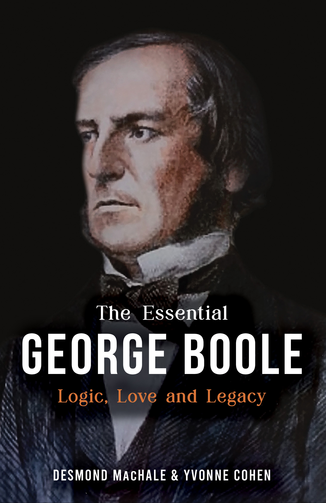

Origen y captura de datos.
Es el origen primario de donde se extrae la información. Históricamente, ha evolucionado desde los textos lógicos y censos en tablillas de arcilla, hasta los complejos repositorios digitales y bases de datos automatizadas de la actualidad.
Las APIs permiten recopilar datos desde plataformas externas en tiempo real, facilitando la integración entre aplicaciones y sistemas empresariales.

George Boole fue un brillante matemático del siglo XIX que creó el álgebra booleana, la base lógica que permite a las computadoras tomar decisiones binarias.
La procedencia (provenance) registra el historial completo de un dato. Permite saber quién lo creó, cómo se capturó y qué transformaciones sufrió antes de llegar al sistema.
“Podemos considerar que el razonamiento es una forma de cálculo.” — Leibniz